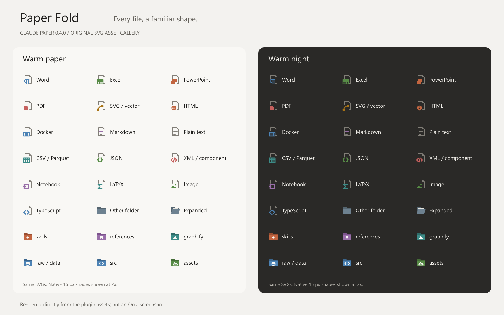
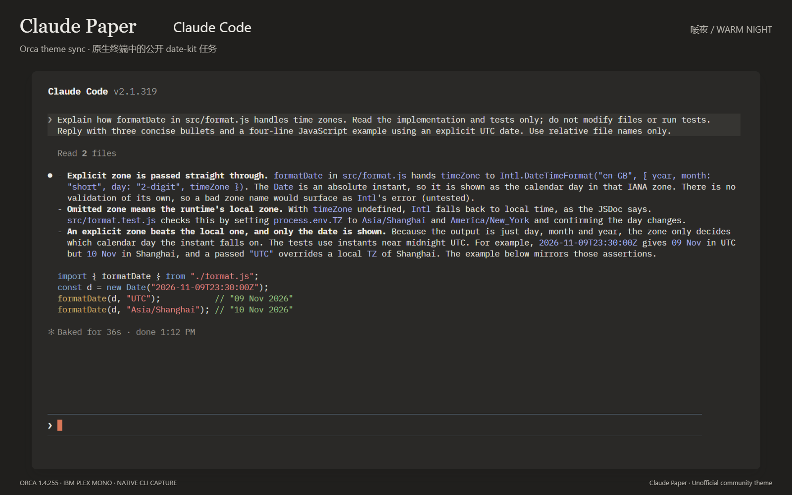

Clear content. Quiet surfaces.
73 app color tokens cover chat, sidebars, tabs, code and diffs. Paper tones separate surfaces; terracotta marks actions; blue highlights links and chat selections.

CLAUDE-INSPIRED · A THEME FOR ORCA
A warm, coherent home for your conversations, code, terminal and file tree.
Warm Paper · Warm Night · Paper Fold icons
0.5.0 · Unofficial · MIT + OFL font · Data only

Native chat: a public date-kit task, complete reply and composer
Click to enlarge ↗Native Orca 1.4.255 captures use public Chinese Chat and English CLI demos. Captions are translated; original UI text is preserved. Icon galleries are rendered from the plugin SVGs. Media notes
ONE WORKSPACE, ONE VISUAL LANGUAGE
One visual language for the places you move through every day.
73 app color tokens cover chat, sidebars, tabs, code and diffs. Paper tones separate surfaces; terracotta marks actions; blue highlights links and chat selections.
77 original SVGs and 512 mappings distinguish documents, code, tests and tools. 16 folder categories include both closed and expanded states.

Warm Paper and Warm Night for coding agents, with matching Codex syntax themes and an optional IBM Plex Mono font. Claude Code can also follow the palette through Orca’s theme sync.

COMMON FOLDERS, CLEAR RULES
118 common folder names are grouped by purpose, including skills, plugins, source code, data and output. Existing graphify aliases remain compatible; no particular project layout is required.
Orca matches each folder's own name exactly, ignoring case. It does not infer purpose from contents, match paths or inherit a parent's icon. Unlisted names keep the slate folder. Each name below is a separate alias: raw and data both match, and are not a two-level path.
| Category | Matching names (case-insensitive) |
|---|---|
| Skills | skills, skill, .skills |
| References | references, reference, ref, refs, bibliography |
| Graphs & knowledge | graphify, graph, graphs, graphify-out, knowledge, knowledge-base, knowledge_graph |
| Data | raw, data, dataset, datasets, database, databases, db, sql |
| Source code | src, source, lib, app, packages, components, sources, code, core, modules, services |
| Tests | test, tests, __tests__, spec, specs, e2e, __mocks__, fixtures, testing, integration, unit |
| Documentation | docs, doc, documentation, wiki, guides, guide, examples, tutorials, notes |
| Assets | assets, public, static, images, img, media, icons, fonts, image, pictures, resources |
| Configuration | config, configs, .config, .vscode, .github, .idea, .husky, .devcontainer, settings |
| Scripts & tools | scripts, script, bin, tools, utilities, utils |
| AI agents | .claude, .codex, .cursor, .agents, prompts, agents, .gemini, .opencode |
| Dependencies | node_modules, vendor, .venv, venv, .pnpm-store, pods |
| Build & cache | dist, build, out, target, .next, .nuxt, .output, .turbo, .cache, coverage |
| Version control | .git, .hg, .svn |
| Plugins | plugins, plugin, extensions, extension, addons |
| Output & reports | output, outputs, result, results, reports, exports |
A PUBLIC EXAMPLE
The public date-kit example uses native Intl.DateTimeFormat, with no dependencies. English and Chinese guides explain the same behavior and commands.
Let formatDate use the local time zone by default, while keeping an explicit time-zone argument. Add tests around midnight.Read the English example ↗
import { formatDate } from './format.mjs';
const date = new Date('2026-11-09T23:30:00Z');
formatDate(date, 'UTC'); // 09 Nov 2026
formatDate(date, 'Asia/Shanghai'); // 10 Nov 2026The same instant can have a different calendar date in another time zone. Omitting the second argument uses the runtime's local zone.
MAKE IT YOURS
2 app themes · 2 terminal palettes · Paper Fold icons · Optional font
Install from the Orca community store ↗01 / RUN IN YOUR TERMINAL
orca plugin install GongXLiang/Claude-paper --json02 / SETTINGS → APPEARANCE
Select Claude Paper · 暖纸 (Warm Paper) for the light app theme and Claude Paper · 暖夜 (Warm Night) for dark. Choose the matching terminal palettes and Claude Paper · 纸折图标 for file icons.
03 / CHAT: APP COLORS OR TERMINAL COLORS
For the Chat colors shown here, keep Match Terminal Appearance off. Turn it on if you prefer chat in your terminal font; chat then uses Claude Paper’s terminal colors.
OPTIONAL / CLAUDE CODE CLI
In Settings → Appearance, search “Claude Code” and enable Match Claude Code to Terminal Theme. It follows the terminal palette, including outside Orca. Turning it off restores the previous Claude Code theme; choosing a theme inside Claude Code stops the sync. This plugin does not enable it automatically.
For matching code blocks and diff syntax, install the two companion themes, then choose claude-paper-light or claude-paper-dark with /theme in Codex CLI. This is a separate opt-in step. Codex setup and theme files ↗
IBM Plex Mono adds a quiet, readable monospace option for code and terminals. It is bundled under the SIL Open Font License; Chinese characters use system fallback fonts.
WHAT CHANGES
App colors, file icons and optional fonts through public interfaces. No runtime entry point or extra capability permissions.
| Area | Claude Paper |
|---|---|
| App, chat, editor and diffs | 73 color tokens and syntax colors |
| Files and folders | Paper Fold icons; exact folder names and a slate fallback |
| Terminal | Background, foreground, cursor, selection and 16 ANSI colors |
| Codex CLI code & diff syntax | Optional .tmTheme companion files; select in Codex |
| Fonts | Optional IBM Plex Mono; select in Orca’s font picker |
| 24-bit CLI truecolor | Controlled by the CLI program |
| Layout, corners, app motion and button icons | Controlled by Orca and user settings |
#F9F8F5Warm Night#2A2927Terracotta#D97757Mist blue#8DB5E0